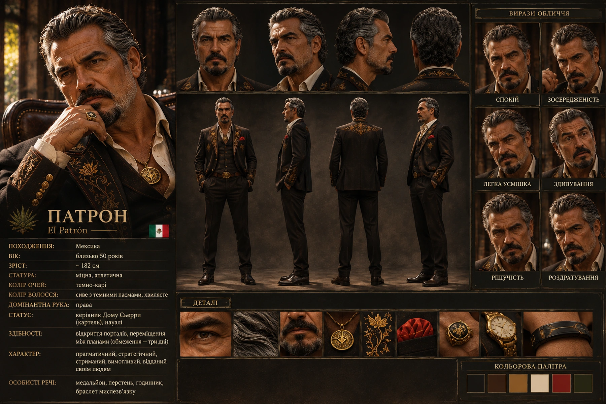

ОСНОВНА ІНФОРМАЦІЯ
Керівник Дому Сьєрри
Патрон очолює Дім Сьєрри в Мексиці. Він звик самостійно ухвалювати рішення й не збирається віддавати комусь владу над своїм Домом. Водночас розуміє, що відкрите протистояння з Орденом може поставити під загрозу людей, яких він має захистити.
Ім’я: особисте ім’я не розкрите; El Patrón — титул / звертання
Походження: Мексика, Дім Сьєрри
Вік: близько 50 років (за візуальною карткою)
Зріст: близько 182 см (за візуальною карткою)
Статура: міцна, атлетична
Зовнішність: темно-карі очі; хвилясте сиве волосся з темними пасмами; вуса й коротка борода
Статус: керівник Дому Сьєрри, науалі
Здібності: відкриття порталів і переміщення між планами; для науалі діє обмеження перебування до трьох днів
Домінантна рука: права (за візуальною карткою)
Особисті речі: медальйон, перстень, годинник, браслет мислезв’язку
ІСТОРІЯ
Дім під тиском Ордена
Науалі зробили Дім Сьєрри централізованою та впливовою організацією: вони сильніші за звичайних людей, живуть довше й підтримують зв’язки з іншими планами. Через ці можливості Орден прагне отримати контроль над науалі, а через них — впливати на самі Доми.
Патрон не має наміру віддавати комусь владу над Домом. Відкрите протистояння поки небезпечне, тому його головний пріоритет — завершити переселення людей і приховати справжні масштаби підготовки.
Представниця Ордена Інес вимагає виділити одного або двох порталістів у постійне розпорядження Ордена. Патрон не погоджується одразу: він розуміє, що така поступка може стати першим кроком до втрати контролю над власним Домом.
РІШЕННЯ ТА СОЮЗИ
Підготовка до переселення
Патрон радиться з Естебаном, якого поважає за досвід і здібності. Після ініціації в Україні Естебан став неформальним лідером характерників Дому, але залишається підлеглим Патрона й людиною Сьєрри.
Він доручає Естебану підготувати бійців, готових вирушити в Україну для можливої ініціації, а також звернутися до українського гетьмана щодо відрядження вже посвячених характерників. Обидва шляхи не гарантують швидкого результату, але Патрон вирішує працювати за обома напрямками.
Він прагне зберегти Дім як самостійну спільноту: його люди можуть залишатися частиною Сьєрри й водночас мати зобов’язання перед спільнотою характерників.
ХАРАКТЕР І ВІЗУАЛЬНИЙ ОБРАЗ
Стратегічність і самоконтроль
У сюжеті Патрон постає прагматичним і стратегічним керівником. Він стриманий у розмовах, уважно оцінює співвідношення сил, не плутає оплачувану охорону з відданістю й не дозволяє тиску змусити себе до необдуманих рішень. Водночас він цінує людей Дому та відповідально ставиться до їхньої безпеки.
Затверджений візуальний образ показує чоловіка приблизно п’ятдесяти років у темному костюмі з вишитими золотими деталями та світлою сорочкою. Образ доповнюють медальйон, перстень і годинник. Точний вік, зріст і особисте ім’я в сюжетному фрагменті не названі.
Канон: сюжетні відомості звірені з фрагментами «Патрон-1. Дім Сьєрри. Візит представниці», «Патрон-2. Дім Сьєрри. Вимоги Ордена» та «Патрон-3. Дім Сьєрри. Розмова з Естебаном». Зовнішність, вік, зріст і особисті речі взято з наданої візуальної картки.